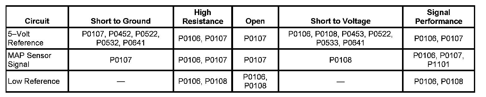
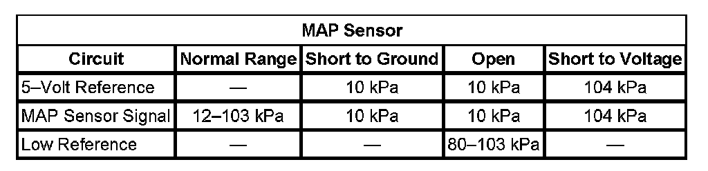

P0108
DTC P0107 or P0108
DIAGNOSTIC INSTRUCTIONS
- Perform the Diagnostic System Check - Vehicle prior to using this diagnostic procedure. Initial Inspection and Diagnostic Overview
- Strategy Based Diagnosis
- Diagnostic Procedure Instructions.
DTC DESCRIPTORS
DTC P0107
Manifold Absolute Pressure (MAP) Sensor Circuit Low Voltage
DTC P0108
Manifold Absolute Pressure (MAP) Sensor Circuit High Voltage

DIAGNOSTIC FAULT INFORMATION
TYPICAL SCAN TOOL DATA
MAP Sensor:

CIRCUIT DESCRIPTION
The manifold absolute pressure (MAP) sensor measures the pressure inside the intake manifold. Pressure in the intake manifold is affected by engine speed, throttle opening, air temperature, and barometric pressure (BARO). A diaphragm within the MAP sensor is displaced by the pressure changes that occur from the varying load and operating conditions of the engine. The sensor translates this action into electrical resistance. The MAP sensor wiring includes 3 circuits. The engine control module (ECM) supplies a regulated 5 volts to the sensor on a 5-volt reference circuit. The ECM supplies a ground on a low reference circuit. The MAP sensor provides a signal voltage to the ECM, relative to the pressure changes, on the MAP sensor signal circuit. The ECM converts the signal voltage input to a pressure value.
Under normal operation the highest pressure that can exist in the intake manifold is equal to BARO. This occurs when the vehicle is operated at wide-open throttle (WOT) or when the ignition is on while the engine is off. Under these conditions, the ECM uses the MAP sensor to determine the current BARO. The lowest manifold pressures occur when the vehicle is idling or decelerating. MAP can range from 10 kPa, when pressures are low, to as much as 104 kPa when pressures are high, depending on the BARO. The ECM monitors the MAP sensor signal for pressure outside of the normal range.
CONDITIONS FOR RUNNING THE DTC
P0107
- DTCs P0641, P0651, P1516, P2101, P2125, P2135, P2138, P2176 are not set.
- The engine speed is more than 400 RPM.
- The throttle angle is more than 0 percent when the engine speed is less than 800 RPM. OR The throttle angle is more than 13 percent when the engine speed is more than 800 RPM.
- This DTC runs continuously within the enabling conditions.
P0108
- DTCs P1516, P2101, P2125, P2135, P2138, P2176 are not set.
- The engine has been running for a period of time that is determined by the start-up engine coolant temperature (ECT). The time ranges from 8 seconds at less than -30°C (-22°F) to 3 seconds at more than 30°C (86°F).
- The throttle angle is less than one percent when the engine speed is less than 1,200 RPM. OR
- The throttle angle is less than 20 percent when the engine speed is more than 1,200 RPM.
- This DTC runs continuously within the enabling conditions.
CONDITIONS FOR SETTING THE DTC
P0107
The ECM detects that the MAP sensor voltage is less than 0.10 volt for more than 4 seconds.
P0108
The ECM detects that the MAP sensor voltage is more than 4.90 volts for more than 4 seconds.
ACTION TAKEN WHEN THE DTC SETS
DTCs P0107 and P0108 are Type B DTCs.
CONDITIONS FOR CLEARING THE MIL/DTC
DTCs P0107 and P0108 are Type B DTCs.
DIAGNOSTIC AIDS
Verify the integrity of the MAP sensor system by inspecting for the following conditions:
- Intake manifold vacuum leaks
- Any damage to the MAP sensor housing
- Any damage to the MAP sensor seal
- A loose or improperly installed MAP sensor
- A restriction in the vacuum source of the MAP sensor
CIRCUIT/SYSTEM VERIFICATION
- Use the scan tool and compare the MAP Sensor parameter to a known good vehicle, under various operating conditions.
- Use the scan tool and compare the MAP Sensor parameter at ignition ON, with the engine OFF, to the Altitude vs Barometric Pressure table. Refer to Altitude Versus Barometric Pressure.
CIRCUIT/SYSTEM TESTING
IMPORTANT: All electrical components and accessories must be turned OFF and allowed to power down.
1. Ignition OFF, disconnect the MAP harness connector at the MAP sensor.
2. Ignition OFF, test for less than 5 ohms of resistance between the low reference circuit and ground.
- If greater than the specified range, test the low reference circuit for an open/high resistance. If the circuit tests normal, replace the ECM.
3. Ignition ON, test for 4.8-5.2 volts between the 5-volt reference circuit and ground.
- If less than the specified range, test the 5-volt reference circuit for a short to ground or an open/high resistance. If the circuit tests normal, replace the ECM.
- If greater than the specified range, test the 5-volt reference circuit for a short to voltage. If the circuit tests normal, replace the ECM.
4. Verify the scan tool MAP Sensor parameter is less than 12 kPa.
- If greater than the specified range, test the signal circuit for a short to voltage. If the circuit tests normal, replace the ECM.
5. Install a 3A fused jumper wire between the signal circuit and the 5-volt reference circuit. Verify the scan tool MAP Sensor parameter is greater than 103 kPa.
- If less than the specified range, test the signal circuit for a short to ground or an open/high resistance. If the circuit tests normal, replace the ECM.
6. If all circuits test normal, test or replace the MAP sensor.
COMPONENT TESTING
IMPORTANT: You must perform the Circuit/System Testing in order to verify the integrity of the MAP sensor circuits before proceeding with the Component Testing.
1. Turn ON the ignition, with the engine OFF, and remove the MAP sensor.
2. Install a 3A fused jumper wire between the 5-volt reference circuit and the corresponding terminal of the MAP sensor.
3. Install a jumper wire between the low reference circuit of the MAP sensor and ground.
4. Install a jumper wire to the MAP sensor signal circuit.
5. Connect a DMM between the jumper wire from the MAP sensor signal circuit and ground.
6. Install the J 35555 to the MAP sensor vacuum port. Slowly apply vacuum to the sensor while observing the voltage on the DMM. The voltage should vary between 0-5.2 volts without any spikes or dropouts.
- If the voltage is not within the specified range or is erratic, replace the MAP sensor.
REPAIR INSTRUCTIONS
Perform the Diagnostic Repair Verification after completing the diagnostic procedure.
- Manifold Absolute Pressure Sensor Replacement
- Control Module References for ECM replacement, setup, and programming. Verification Tests